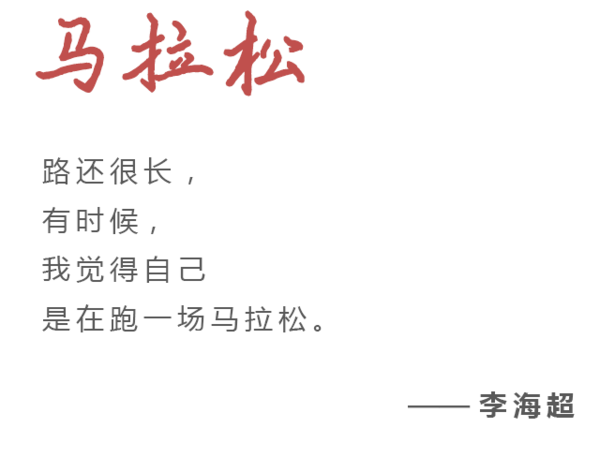
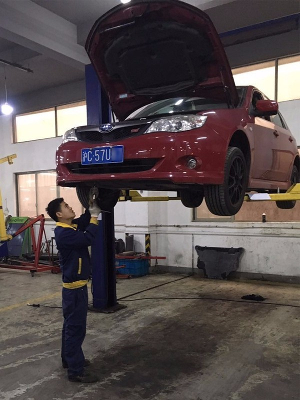
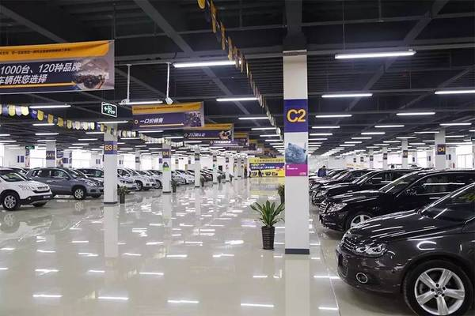

第 139 期
撰稿丨程春晓
编辑丨孙雨晨
过京沪高速涵洞向北50米，一栋6层楼高的建筑突然出现在眼前。这栋建筑方方正正，表面涂饰着斜蓝黄白色块，韩寒的巨幅广告占据了整整三层楼高。这座占地约两万平米的大楼是车王开设的第一家门店，也是车王总部的所在地。
这家号称全国最大的线下二手车超市成立于2011年。创始人李海超此前有过一段为期6年的二手车创业经历。他称这段经历「比较坎坷」，在试了很多模式都没走通的情况下，他把这家名为「51汽车」的网站转手他人，转身发力线下零售连锁店，做了车王。

车王董事长兼CEO 李海超
01
依托线下门店解决行业痛点
早上不到九点，阳光射进车王二手车江桥店一楼大厅。二十几个身着黑西装的年轻男女整齐地列成两队，车王线下店每日例行的晨会即将开始。在900多公里以外的车王天津店，也正上演着相似的情景。这是李海超构想的一个缩影：依托于实体门店，依托于线下服务团队，来解决中国二手车市场多年以来的积弊。
「二手车的很多问题是无法通过线上来解决的，比如卖二手车的有很多不诚信的车商，对消费者来说，买的时候信息不透明，买完了以后售后没保障，这都是行业的痛点。」
李海超40岁上下，有过10年互联网创业经历。1999年，他从英国回到中国，以CTO的身份联合创办掌上灵通。5年后，这家公司上市，李海超在而立之年便实现了财务自由。他开始享受生活，花很多时间去打高尔夫，这样过了两年，却日渐感到空虚。出于对二手车特殊的情结，李海超2005年决定再度创业。这便有了51汽车网——后来，这家网站孵化出天天拍车。但他越做越觉得信息平台把控不了用户最担心的质量问题，于是他想到了复制美国CarMax的模式，把国外二手车零售超市的理念搬到国内来。
李海超口中的这家全美最大的二手车零售公司，成立于1993年，每年二手车销量100万台左右，拥有100多家门店。
「它其实就是车王的榜样，我们也是朝着那个方向走。」
2011年，车王在上海的第一家门店江桥店开业，第二年又开了一家浦东新店。目前车王在全国共有15家直营门店。这个速度并不快，每年能开多少家门店，取决于融资的规模和团队的服务能力能不能跟得上。
车王希望未来以人口数量庞大的直辖市和省会城市为中心布局，一个省份开设两到三家店，以覆盖当地市场。车王COO汤征峰对「新经济100人」说，开一家店需要5000万到8000万元，由于需要的资金量大，车王不追求店的数量，也不追求非常快的速度。
政策和税收是在人口之外，车王在开店的过程中另外两个不得不考虑的市场因素。尽管国务院下发意见，鼓励符合环保标准的车辆在除北上广几个空气污染问题严重的城市之外流通，但目前各地仍然坚持不同的准入政策。车王华东区总经理沈亮认为这一点对车王极为不利，会导致库存流转不太通畅。
另外，2%的税收对于车王来说也是不低的成本。如果车王所有的车辆以收取佣金的方式帮助车主代销，而非自采自销，便可以省去这部分税收。然而，从实际经营来看，车王只有10%的车属于代售。沈亮盼望华东一带能早点实现全面营改增，这样店面就只需要为盈利的部分纳税，否则按车辆出售价格上税，「控制不好，就要亏损。」
走进江桥店整备与售后中心，一股浓重的机油味扑面而来。一台三菱轿车正坐在升降机上，缓缓地升向二楼。车王高级副总裁张剑平向「新经济100人」介绍，一辆车被收购前需先经过检测；如果车况不错，再由渠道部门协商价格；收购回来的车辆由整备车间进行机电故障修复、漆面处理、清洁消毒；达到车王的出厂标准后，这些车会被打上车王认证的标签，进入展厅销售。这套流程是张剑平从他的前东家——德国机动车监督协会DEKRA引进的。
为了保证检测质量，车王要求检测师傅必须有3-5年的修车经验，拿到一辆车不仅能判断哪里有问题，最好还能预估出维修的成本。
「我们检车，一些胶条、密封条都要拉开的，车都必须要顶起来看它下部的，像一些有结构性损伤的车，一顶起来一目了然。」张剑平说。

车王江桥店整备车间内工人正在整备
车王的车约有25%的来自「车贩子」，这里面也包括瓜子二手车、人人车这样的二手车平台；20%来自4S店；35%来自于天天拍车这样的平台，剩下的20%直接从个人手里收购。每个门店有两队人马负责收车，一队接待店内上门卖车的客户，另一队负责外拓。
邓浩飞是江桥店渠道部业务经理，底下管了9个人，平时4个人留在店里，5个人在外面跑。他们的任务就是到处找车源，有时候还以个人的身份，去一些C2C平台上收车。他发现，个人卖家决策期长，对价格较为敏感，询价的居多，真正卖的少。
为了不流失客户，如果价格没谈拢，车王的销售就会推荐用户把车挂到车王的平台上直卖，在车没卖出去之前，车主还可以继续开，有买家想买车的时候，再由车王把双方约到店里来验车。邓浩飞估计，江桥店一个星期约有30-40个客户愿意采取这种方式卖车，但是销售的效果没有实体店的效果好，「毕竟买家只是在网上看到这个信息，而且还要邀约，流程还是比较复杂的。」
这一部分代售的车辆占车王库存的10%，加上店面里待售的2300多台二手车，车王的总库存目前有3037台车。总库存里90%的车是自采自销。「自采自销的模式，是自然需求的结果。大部分消费者卖车是希望现金快速回流。」汤征峰告诉「新经济100人」。
相比其他二手车电商动辄几万、十几万的在售车辆，车王的月交易量只有两三千台。汤征峰解释，车王寻找的是符合车王标准的车源，没有涉过水、没有发生过结构性损伤、没有调过表，「这种车你说一个月成交几万辆，还真找不出来。」车王跟车鉴定合作，获得二车手的所有4S店的记录来检测车况。按照这种标准，车王收购二手车的成功率是15%，100个售车信息里能够有15台被收购。主要问题在于调表、结构性损伤以及车价谈不拢。
2014年以后，中国二手车电商热了起来，有做B2B拍卖平台又做B2C撮合平台的优信，有做C2C的瓜子二手车、人人车，有做C2B拍卖平台的天天拍车。在车王以6年15家门店的速度生长的时候，一些互联网二手车平台正在以每年十几座城市的开拓速度攻城略地。李海超很清楚这意味着什么，「一个一个门店去复制，扩张的速度不会太快的。一些互联网公司会觉得这简直是蜗牛一样的速度。」
李海超看起来不那么担心，他认为车王做的是跟互联网平台「井水不犯河水的生意」。他以瓜子二手车为例，认为对方卖的是中低端车，均价不超过10万，自己服务的是中高端用户，两家的市场并没有重合。在心态上，他不否认自己对外面的世界发生了什么，都有一种「躲进小楼成一统，管它春夏与秋冬」的态度。
车王2016年销售1.5万台车，按照客单价16万、毛利10%计算，车王一年营收24亿元，毛利润约2.4亿元。如果看单店的效益，车王有一半是盈利的，另一半还在成长期。看总账，减去2个多亿的店面租金、服务成本等，车王整体略有亏损。
02
靠输出服务扩大规模
上海姑娘张志殷坐在江桥店总经理办公室的桌子后，她曾是车王的销售冠军，一天签单八台，一个月卖出33台车，这个纪录至今车王无人打破。
销售人员的能力、店面的大小决定了店面的销售额天花板的高度。江桥店2012年年底一个月销量接近250台，4年后，月销量大概300台。
车王2016年销售二手车1.5万台。根据优信提供给「新经济100人」的数据，优信二手车2016年12月交易量是2.5万台。李海超强调：「我们看的不是一年做多少万台，看到的是毛利率、净利润、单店盈利模型。」
从2011年到2016年，车王大约销售4万台车，作为非标品的二手车，4万台车就意味着4万个SKU，这给车王带来的第一个麻烦是评估定价复杂，第二个麻烦是不能通过规模采购降低成本，第三是销售成本高。这种非标品的自采自销，在扩张上会很慢。李海超也承认这一点，不过他认为，现在二手车市场商品不是标准化的，但服务可以标准化。
针对车况不透明，车王建立了检测认证体系，李海超一字一顿地说：「245项检测，232项认证，232项PDI」，他一连说了三遍，因为车王的二手车从收到卖，要经过三道检测。「我们是一口价，车况透明化、价格透明化。」李海超说。他向「新经济100人」展示，手机客户端里一台车的车况：2013年10月上牌，11月第一次维修，行驶2777公里，前杠右前叶子板喷漆、右前叶子板整形，前杠拆装。

车王检测认证体系
在售后一端，车王提供7天可退换服务，按照一天千分之二或者千分之五来收费；有理由退换则是免费。从开业到2016年12月，车王大概卖了四五万台，退车赔付的不超过10台。并且提供3个月5000公里的银牌质保，或者延长到两年的金牌质保。
李海超认为规模的问题可以靠输出服务，吸引加盟来解决。他极为欣赏海底捞注重产品品质和服务质量的经营理念，他对「新经济100人」说，车王要做的不是二手车行业的百度、淘宝，而是二手车零售业里的「海底捞」。
张志殷担任总经理的江桥店设有5个部门：销售部、检测部、售后中心、财务部、业务支持部。车王采取一套比较严密的管理体系，李海超说：「我是编程出身，有个IT脑子，偏理性，注重逻辑，内部管理非常系统化，一个萝卜一个坑地设计好岗位。」
汤征峰希望在开设三五十家自营店之后，通过互联网模式做更开放的平台。在每个省会或者一些重点城市，车王直营店店面面积超过1万平方米，甚至达到3万平方米，相当于当地的二手车体验中心。到车王来买车的标准是统一的，认证是统一的，售后是统一的，将非标产品做成标准化服务，让客户接受。
家住江桥店附近的费先生，从事化妆品电商工作，已经在车王买了四台车。据汤征峰说，车王很大一部分客户是回头客，或是通过朋友介绍来买车的。这是李海超坚信服务能成就车王地位的原因之一，他觉得客户来车王买车，图的就是放心有保障。为了做到这一点，服务成本重是必然的，因为车王需要花很多时间去培训员工，以保证他们熟悉车王的标准和工作的流程。
但他同时也意识到员工的经验、服务能力是制约销量的一个瓶颈，此外新一轮融资还没有到位，公司暂时无法扩大规模，这也是销量上不去的一个原因。
按照李海超的设想，资金到位能解决车王库存少，买家选择余地小的问题。如果买家有更多的选择，交易的成功率会相应提高。库存周转加快，意味着车王会有充足的资金去采购车辆补足库存，店面的运转会由此进入良性循环。

车王郑州店店内照片
如果按照每20平方米停放一台车来计算，一家1.2万平方米的店面，可以容纳300-400台车。显然，店面的容量扩充到一定数量就会停止增长。为了提高库存的周转效率，加快资金回笼，车王用K值管控法管理库存。
所谓K值管控法，就是为每一台车定一个K值，即安全周转期，一般定为30天。如果一台车在30天之内卖掉，车王会获取比较高的毛利，在K值之内的车称为绿标车。K-2K之间，称为黄标车，意思是销售出现一定危险，需要进行重新整备等调整。超过2K的，称为红标车，红标车一般来说是很难卖出去的车，大约占15%-20%左右，此时客户可以进行砍价。
目前车王的存货周转天数为50天。从收车、整备到进展厅大约要花近15天，卖出大约需要30天，后续过户、贷款等手续需要7-10天。
由于采购会占用大量的资金，车王想要扩大规模只能依靠输出服务吸引加盟的方式。「业内外很看好这样（车王）的模式，他们也很想来做，但他们以前没做过，没有操作的经验，所以希望我们输出管理方式，给他保证和支持。」
中国线下的二手车经销商绝大多数的销售依赖于货源，而没有建立自身的零售能力。美国有一家汽车分类信息网站AutoTrader，上面有4万个二手车经销商发信息，为之付费。李海超估计在中国能达到二手车经销商级别的，可能不超过100家。
汤征峰认为，等车王建立起了自己的标准和品牌知名度，就可以逐渐放开平台，吸引车商合作。车商有自身的采购优势，通过嫁接这种优势，车王的库存会被慢慢放大，这样就可以解决资金不足导致的库存跟不上的问题。
但实际情况是，即便不交加盟费，一些「好学」的车商也能照猫画虎做出一家类似的店面来。沈亮对「新经济100人」说，车王异军突起一下吸引了很多消费者的眼球，于是很多车商跟风，市场上一时间冒出了很多认证二手车，「他们都是学车王的，而且他们的品质也在提高，会分走车王的一部分客流。」
面对传统车商的夹击，李海超对自己成体系的服务抱有十足的自信，「车王表面看是传统商业模式，但贯穿整个流程的是我们的信息化系统，我们新收购一台车进入车王的ERP系统，不用操作就自动瞬间同步到所有平台，包括自有的官网、微信服务号、App，和外围的汽车之家、58同城、优信二手车等。我们还有大数据平台，有自己的二手车估价系统。」这是他认为可以支撑公司高效运转的核心。
03
发展融资租赁金融服务
车王每销售一台车，后续的金融服务为其提供2.5%-3%的毛利。车王主推的金融服务是融资租赁。在江桥店，选择融资租赁的客户大约有25%。整个车王，选择融资租赁的客户比例是27%。
王子平之前是平安银行汽车金融事业部北京分部的总经理，不甘心在大企业里循规蹈矩，于2013年加入了车王。在王子平看来，融资租赁是真正适合二手车行业的金融工具。
2016年3月，银监会将二手车贷款首付比例由之前的最低50%下调至30%，12月28日，央行、银监会联合起草的《关于修改<汽车贷款管理办法>的决定（征求意见稿）》开始向社会公开征求意见，政策拟对贷款最高比例根据市场波动情况进行调控。与汽车消费金融实施的「贷款最高发放比例要求制度」相比，融资租赁方式更加灵活。
相比传统的汽车消费金融，融资租赁产品可以有回购、正向租赁、反向租赁等形式，更加适合二手车业务。比如回购，是二手车成熟市场的一个典型业务，建立在二手车市场高度流通的基础之上。购车时，客户与车王签订一个一年或两年的回购协议，期满后客户可以选择还贷或者直接把车按协议价卖给车王。通过这种方式，实际上盘活了整个二手车市场。目前选择该业务的客户约占15%。
为了解决融资租赁的资金来源，车王曾经在铜板街和招财宝上各做过一期融资，规模是4000万和5000万。方式是，车王把合同包发给互联网金融平台，开放投资人购买。一个亿的合同包，会放出八千万或者八千五百万的质押类贷款。
但互联网金融融资成本对于车王来说太高，2016年这家公司尝试了另外一种办法——到上海证券交易所发行公募ABS。这次公募，车王共融资1.14亿，资金成本6.1%。车王融资租赁总经理王子平认为，这次ABS发行，实际上具有里程碑式的意义，交易所花了两周时间竞调，把车王的流程走了一遍。最后得出的结论是车王3A级（偿还能力充足）资产达到了80%。这算是从侧面给了车王一个肯定。
车王把贷款的客户分为四个类型：优良职业、标准受薪、自雇人士和自由职业。按类型不同，客户需要提供不同程度的资料。如优良职业定义为世界500强和事业单位的员工，这种情况下，贷款手续比较简化，一个身份证就可以申请贷款。自由职业就需要比较多的材料。
车王按照收集资料、电话调查、审批、面签的环节，给客户放款。限于人力，目前车王审批环节以在线方式为主，通过第三方征信公司对客户进行征信，此外还进行公安联网核查，查询法院执行记录等。如果把逾期超过90天的贷款定义为不良，那么车王的坏账率约为千分之三。
王子平说最怕遇到职业诈骗的。他们在北京的时候遇到一批天津来的骗子。「这些人从赌场出来的，输的倾家荡产了，如果不还钱可能就没命了，都是团伙作案」。这帮骗子到车王骗了3台车，其中有一台没有拆GPS，车王根据定位追踪到了这辆车，打了10个月的官司终于把车赢了回来。
从2015年到2016年，二手车电商的竞争激烈化，融资消息频频传来，手握重金的二手车电商们砸下重金猛烈打广告。车王在这个节奏里面显得慢了。汤征峰说：「二手车体量很大，没有哪一家能把这个行业独占。」
李海超坚信车王这个模式行得通，只是要慢工出细活，如果速度太快，服务品质就会失控。「二手车市场不太像是一个爆发式增长的市场，路还很长，有时候，我觉得自己是在跑一场马拉松。」
- 推荐图文
- 推荐人物
- 推荐企业